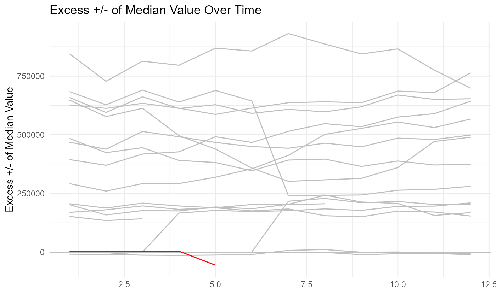

Create a plot showing the excess of the median value
Source:R/plt-ts-median-excess.R
ts_median_excess_plt.RdPlot out the excess +/- of the median value grouped by certain time parameters.
Arguments
- .data
The data that is being analyzed, data must be a tibble/data.frame.
- .date_col
The column of the tibble that holds the date.
- .value_col
The column that holds the value of interest.
- .x_axis
What is the be the x-axis, day, week, etc.
- .ggplot_group_var
The variable to group the ggplot on.
- .years_back
How many yeas back do you want to go in order to compute the median value.
Details
Supply data that you want to view and you will see the excess +/- of the median values over a specified time series tibble.
See also
Other Plotting Functions:
diverging_bar_plt(),
diverging_lollipop_plt(),
gartner_magic_chart_plt(),
los_ra_index_plt(),
ts_alos_plt(),
ts_plt(),
ts_readmit_rate_plt()
Examples
suppressPackageStartupMessages(library(timetk))
ts_signature_tbl(
.data = m4_daily
, .date_col = date
) %>%
ts_median_excess_plt(
.date_col = date
, .value_col = value
, .x_axis = month
, .ggplot_group_var = year
, .years_back = 1
)
#> pad applied on the interval: day
#> Joining with `by = join_by(month)`
#> Warning: Removed 261 rows containing missing values or values outside the scale range
#> (`geom_line()`).
